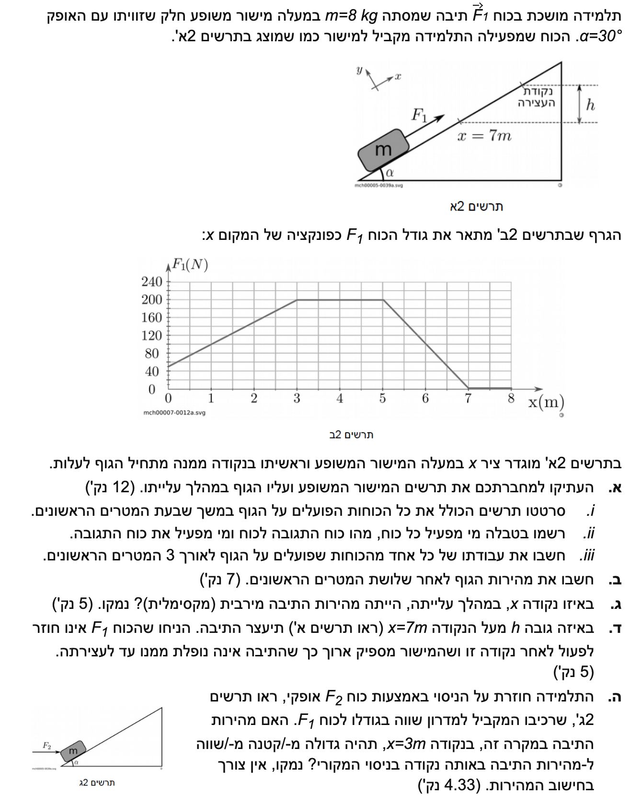

פתרון מודרך: דינמיקה ועבודה-אנרגיה (מישור משופע)
בחינת מתכונת דרכא 2019 • פיזיקה 5 יח"ל
פתרון מלא ומפורט, שלב-אחר-שלב, כולל שרטוט תרשימי כוחות, פירוט זוגות פעולה ותגובה, וחישובי אנרגיה.
עודכן:
--- --:--:--
מבט כללי על השאלה
שאלה זו משלבת קלאסיקה של תנועה על מישור משופע יחד עם עקרונות של עבודה ואנרגיה. בחלק הראשון נידרש לנתח את חוקי ניוטון על גוף המושפע ממספר כוחות ולזהות את הכוחות הפועלים עליו ואת אלו שהוא מפעיל בתגובה.
בחלק השני והשלישי אנו נחשפים לכוח חיצוני המשתנה כפונקציה של המיקום (נתון כגרף). הדרך הנוחה והנכונה לגשת לסוג כזה של שאלות אינה דרך קינמטיקה קלאסית, אלא תוך שימוש אלגנטי במשפט עבודה-אנרגיה על ידי חישוב שטחים מתחת לגרף.
בואו נצלול פנימה!

[תמונת השאלה המקורית]
לא נמצאה תמונה בשם question-image.png באותה תיקייה.
מה נתון:
- מסת התיבה: \( m = 8 \text{ kg} \).
- זווית המישור המשופע: \( \alpha = 30^\circ \).
- תאוצת הכובד: \( g = 10 \text{ m/s}^2 \).
- מישור משופע חלק (כלומר, אין כוח חיכוך).
- כוח חיצוני \( \vec{F_1} \) מקביל למישור, פועל כלפי מעלה.
מה מחפשים:
אנו מתבקשים לסרטט תרשים כוחות (תרשים גוף חופשי - FBD) המציג את כל הכוחות הפועלים על התיבה ב-7 המטרים הראשונים לעלייתה.
נוסחאות ועקרונות בשימוש:
החוק השני של ניוטון:
\( \sum \vec{F} = m\vec{a} \)
כמו כן, נשתמש בעיקרון אי-תלות בין צירים המאפשר לפרק את המערכת לציר המקביל ולציר המאונך למישור.
הצבה ופתרון:
בחרנו מערכת צירים נוחה למישור משופע:
ציר ה-\( x \) מקביל למישור (חיובי במעלה המישור), וציר ה-\( y \) מאונך לו (חיובי החוצה מהמשטח).
מסקנה: הכוחות הפועלים הם כוח הכובד \( mg \), הכוח הנורמלי \( N \) והכוח המושך \( F_1 \).
טיפ מורה:
בחירת מערכת צירים המקבילה למישור המשופע (ולא אופקית/אנכית לחלוטין) תפשט מאוד את המשוואות. רק כוח הכובד דורש פירוק לרכיבים (\( mg\sin\alpha \) בציר ה-x ו- \( mg\cos\alpha \) בציר ה-y). כיוון תאוצת הכובד מוגדר כלפי מטה אל מרכז כדור הארץ וסימנו ייקבע בהתאם לציר שבחרנו!
מה נתון: אנו מתבססים על שלושת הכוחות שזיהינו בסעיף הקודם: \( mg, N, F_1 \).
מה מחפשים: עבור כל כוח יש לציין מי הגוף המפעיל אותו, ומהו כוח התגובה שלו (על מי הוא פועל ובאיזה כיוון).
נוסחאות ועקרונות בשימוש:
החוק השלישי של ניוטון (חוק הפעולה והתגובה):
"כאשר גוף A מפעיל כוח על גוף B, גוף B מפעיל בו-זמנית כוח השווה בגודלו והפוך בכיוונו על גוף A."
פירוט הכוחות:
| הכוח הפועל על התיבה |
הגוף המפעיל (הפעולה) |
כוח התגובה (על מי פועל) |
| כוח הכובד (\( mg \)) |
כדור הארץ מפעיל כוח משיכה כלפי מטה על התיבה. |
התיבה מפעילה כוח משיכה כבידתי כלפי מעלה על מרכז כדור הארץ. |
| הכוח הנורמלי (\( N \)) |
משטח המישור המשופע דוחף את התיבה החוצה. |
התיבה דוחפת את המישור המשופע פנימה בכוח הפוך. |
| כוח המשיכה (\( F_1 \)) |
התלמידה מפעילה כוח כלפי מעלה על התיבה. |
התיבה מפעילה כוח משיכה על התלמידה בכיוון מורד המישור. |
מסקנה: פירוט זוגות פעולה-תגובה מלא מוצג בטבלה.
טיפ מורה:
טעות נפוצה היא לחשוב שהכוח הנורמלי וכוח הכובד הם זוג פעולה-תגובה מאחר ולעיתים הם שווים (במישור אופקי). זכרו: זוג כוחות פעולה-תגובה חייבים לפעול על גופים שונים! כיוון ש-N ו-mg פועלים שניהם על התיבה, הם אינם זוג על פי החוק השלישי.
מה נתון:
- העתק התנועה הוא: \( \Delta x = 3 \text{ m} \).
- הכוח \( F_1 \) משתנה על פי הגרף (בין 0 ל-3 מטרים הוא עולה מ-50 ל-200 ניוטון).
מה מחפשים:
את עבודתו של כל אחד מהכוחות הפועלים על הגוף (\( W_N, W_{mg}, W_{F1} \)) לאורך העתק זה.
נוסחאות ועקרונות בשימוש:
עבודה של כוח קבוע: \( W = F \cos\theta \Delta x \)
עבודה של כוח משתנה: \( W = \int F(x) dx \) (שטח מתחת לגרף).
חישוב העבודות:
1. עבודת הכוח הנורמלי
הכוח הנורמלי תמיד מאונך לכיוון ההתקדמות (\( \theta = 90^\circ \)), לכן עבודתו מתאפסת:
\[ W_N = N \cdot \Delta x \cdot \cos(90^\circ) = 0 \text{ J} \]
2. עבודת כוח הכובד
הזווית בין התקדמות התיבה (מעלה) לבין כוח הכובד (מטה) היא \( 90^\circ + 30^\circ = 120^\circ \). נציב:
\[ W_{mg} = mg \cdot \Delta x \cdot \cos(120^\circ) \]
\[ W_{mg} = 8 \cdot 10 \cdot 3 \cdot (-0.5) = -120 \text{ J} \]
3. עבודת הכוח המושך
מחשבים את השטח מתחת לגרף הכוח בטווח \( x=0 \) עד \( x=3 \) (שטח טרפז):
\[ W_{F_1} = \frac{(50 + 200) \cdot 3}{2} \]
\[ W_{F_1} = \frac{250 \cdot 3}{2} = 375 \text{ J} \]
מסקנה:
\( W_N = 0 \text{ J} \quad ; \quad W_{mg} = -120 \text{ J} \quad ; \quad W_{F_1} = 375 \text{ J} \)
טיפ מורה:
הגיוני מאוד שעבודת כוח הכובד יצאה בסימן שלילי. כוח הכובד מנסה למשוך את הגוף למטה, בעוד הוא מטפס למעלה. כאשר כוח מתנגד לתנועה עבודתו שלילית והוא הופך ל"שואב" של אנרגיה קינטית.
מה נתון: מהירות התחלתית ממנוחה: \( v_0 = 0 \text{ m/s} \). כל העבודות חושבו בסעיף הקודם.
מה מחפשים: את גודל מהירות התיבה \( v \) בנקודה \( x = 3 \text{ m} \).
נוסחאות ועקרונות בשימוש:
משפט עבודה-אנרגיה: \( W_{\text{total}} = \Delta E_k \)
אנרגיה קינטית: \( E_k = \frac{1}{2}mv^2 \)
חישוב:
נסכום את כלל העבודות ונשווה לשינוי באנרגיה הקינטית:
\[ W_{\text{total}} = W_{F_1} + W_{mg} + W_N \]
\[ W_{\text{total}} = 375 - 120 + 0 = 255 \text{ J} \]
התיבה התחילה ממנוחה ולכן \( E_{k_0} = 0 \):
\[ 255 = \frac{1}{2} m v^2 - 0 \]
\[ 255 = \frac{1}{2} \cdot 8 \cdot v^2 = 4v^2 \]
\[ v^2 = 63.75 \implies v = \sqrt{63.75} \approx 7.98 \text{ m/s} \]
מסקנה: מהירות התיבה בנקודה \( x=3 \) היא \( 7.98 \text{ m/s} \).
טיפ מורה:
חישוב המהירות דרך קינמטיקה כאן כמעט בלתי אפשרי בתיכון משום שהכוח משתנה ולכן התאוצה אינה קבועה. גישת האנרגיה חוסכת לנו חישובים מסובכים ומדלגת ישירות מההתחלה לסוף!
מה נתון: נתון הגרף המלא של הכוח כפונקציה של המיקום.
מה מחפשים: את המיקום \( x \) שבו מהירות התיבה הגיעה לשיא (ערך מירבי).
נוסחאות ועקרונות בשימוש:
החוק השני של ניוטון בציר התנועה:
\( \sum F_x = ma_x \).
מהירות הופכת מירבית ברגע שהתאוצה מתאפסת ומחליפה סימן מחיובית (הגברת מהירות) לשלילית (הקטנת מהירות).
פתרון מנומק:
נבדוק את שקול הכוחות בכיוון התנועה. רכיב כוח הכובד במורד המישור הוא \( mg\sin(30^\circ) = 8 \cdot 10 \cdot 0.5 = 40 \text{ N} \). כל עוד \( F_1 > 40 \text{ N} \) התאוצה חיובית. המהירות תהיה מירבית בדיוק כשכוח המשיכה קטן לערך זה:
\[ F_1 - mg\sin(30^\circ) = 0 \implies F_1 = 40 \text{ N} \]
על פי הגרף, באזור הירידה של הכוח (בין \( x=5 \) ל- \( x=7 \)), משוואת הישר היא:
\[ m = \frac{0 - 200}{7 - 5} = -100 \]
\[ F_1(x) - 0 = -100(x - 7) \implies F_1(x) = -100x + 700 \]
נשווה ל-40 ניוטון ונמצא את \( x \):
\[ 40 = -100x + 700 \]
\[ 100x = 660 \implies x = 6.6 \text{ m} \]
מסקנה: מהירות התיבה הייתה מירבית בנקודה \( x = 6.60 \text{ m} \).
מה נתון: מעבר לנקודה \( x = 7 \text{ m} \) כוח \( F_1 \) פוסק. התיבה התחילה ממנוחה ותיעצר בשיא הגובה (מהירות אפס בהתחלה ובסוף). נגדיר את נקודת ההתחלה כמישור ייחוס לאנרגיה פוטנציאלית.
מה מחפשים: את הגובה האנכי \( h \) (מעל נקודת ה-7 מטרים) שבו התיבה תיעצר לחלוטין.
נוסחאות ועקרונות בשימוש:
משפט עבודה ואנרגיה לכוחות לא משמרים: \( W_{nc} = \Delta E_M = E_{M_f} - E_{M_0} \)
אנרגיה מכנית: \( E_M = E_k + U_g = \frac{1}{2}mv^2 + mgh \)
חישוב צעד-אחר-צעד:
1. עבודת הכוחות הלא-משמרים (\( W_{nc} \))
כוח הכובד הוא כוח משמר (העבודה שלו מגולמת באנרגיה הפוטנציאלית), והכוח הנורמלי אינו מבצע עבודה. הכוח הלא-משמר היחיד הוא \( F_1 \). נחשב את העבודה שלו שוב מתוך השטח הכולל מתחת לגרף עד 7 מטרים:
\[ W_{nc} = W_{F_1} = 375 + (200 \cdot 2) + \left(\frac{2 \cdot 200}{2}\right) = 975 \text{ J} \]
2. חישוב הגובה המרבי לפי שימור אנרגיה מכנית
בהתחלה התיבה במנוחה ובגובה אפס, ולכן האנרגיה המכנית ההתחלתית היא \( E_{M_0} = 0 \). בנקודת העצירה המהירות מתאפסת ולכן נשארת רק אנרגיה פוטנציאלית כובדית. נשווה את עבודת \( F_1 \) לאנרגיה המכנית הסופית ונמצא את הגובה הכולל (\( h_{\text{total}} \)):
\[ W_{nc} = E_{M_f} - E_{M_0} \]
\[ 975 = mgh_{\text{total}} - 0 \]
\[ 975 = 8 \cdot 10 \cdot h_{\text{total}} = 80 h_{\text{total}} \]
\[ h_{\text{total}} = \frac{975}{80} = 12.1875 \text{ m} \]
3. מציאת מרחק התנועה וגובה העצירה המבוקש
מהגובה הכולל ניתן לחשב את המרחק הכולל לאורך המדרון. נחסיר ממרחק זה 7 מטרים, ונמצא את הגובה האנכי השייך רק לקטע התנועה שבו פסק הכוח:
\[ x_{\text{stop}} = \frac{h_{\text{total}}}{\sin(30^\circ)} = \frac{12.1875}{0.5} = 24.375 \text{ m} \]
\[ d_{\text{after}} = 24.375 - 7 = 17.375 \text{ m} \]
\[ h = d_{\text{after}} \cdot \sin(30^\circ) = 17.375 \cdot 0.5 = 8.6875 \text{ m} \]
מסקנה: התיבה נעצרת בגובה אנכי של \( 8.69 \text{ m} \) מעל לנקודה בה פסק הכוח.
טיפ מורה:
בחירה בשיטת $W_{nc} = \Delta E_M$ מונעת טעות נפוצה ומסוכנת: ברגע שהגדרנו אנרגיה פוטנציאלית כובדית ($mgh$), אסור לנו לחשב בנוסף גם את עבודת כוח הכובד! עבודה של כוח משמר מומרת לאנרגיה פוטנציאלית, ולכן אנו מתייחסים במשוואה לעבודתו של הפועל ($F_1$) בלבד ככוח שמשנה את סך האנרגיה של המערכת.
מה נתון: מופעל כעת כוח \( F_2 \) אופקי במקום מקביל, אך הרכיב שלו המקביל למישור שווה בגודלו לכוח המקורי. המישור נותר חלק.
מה מחפשים: לקבוע האם המהירות בניסוי החדש ב-\( x=3 \) תהיה גדולה, קטנה או שווה לניסוי המקורי, ולנמק.
נימוק:
בניסוי המקורי, עבודת הכוח המושך תרמה לעלייה באנרגיה הקינטית. העבודה מחושבת על פי הרכיב המקביל לכיוון התנועה בלבד.
בניסוי החדש נתון במפורש שרכיב הכוח החדש המקביל למישור זהה בגודלו לזה שבניסוי המקורי. משמעות הדבר היא שכמות העבודה שהוא מבצע לאורך ההעתק נותרת זהה.
אמנם לכוח החדש יש רכיב שדוחף את התיבה אל תוך המישור וגורם להגדלת הכוח הנורמלי (\( N \)), אך כיוון שהמישור חלק (ללא חיכוך), כוח נורמלי מוגדל זה אינו בא לידי ביטוי כעבודה שלילית נוספת (כי הכוח הנורמלי תמיד מאונך לתנועה ואינו מבצע עבודה).
מסקנה: סך העבודה נשאר זהה ולכן המהירות תהיה שווה למהירותה בניסוי המקורי.
טיפ מורה:
קריאה מדוקדקת של השאלה היא חצי פתרון! צמד המילים "מישור חלק" במבוא לשאלה הכריע כאן. אם המישור לא היה חלק, הלחץ המוגבר שהיה מגדיל את הנורמל היה מגדיל במקביל גם את כוח החיכוך (\( f_k = \mu_k N \)), ואז סך העבודה הכוללת היה קטן והמהירות החדשה הייתה קטנה מזו שבניסוי המקורי.